II — TatouagesQuinze pièces, six vidéos
Tatouages
Les pièces réalisées, photographiées cicatrisées et filmées quand la lumière le permettait. Elles sont classées par thème plutôt que par date : les mêmes figures reviennent d'une saison à l'autre.
Mains
Le premier sujet de Maxime, celui qu'il n'a jamais lâché. Elle tient, elle offre, elle menace : dague, roses, serpent. Presque toujours sur la cuisse ou l'avant-bras, où elle se lit debout.
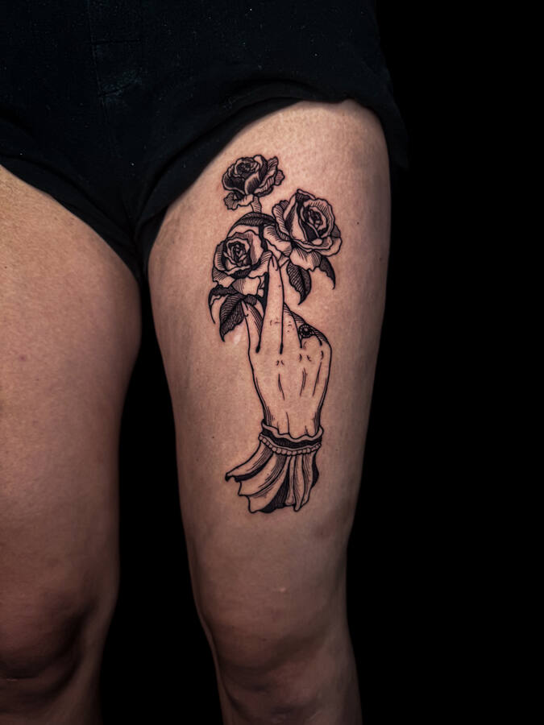
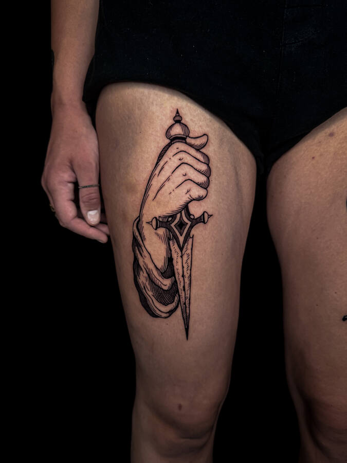
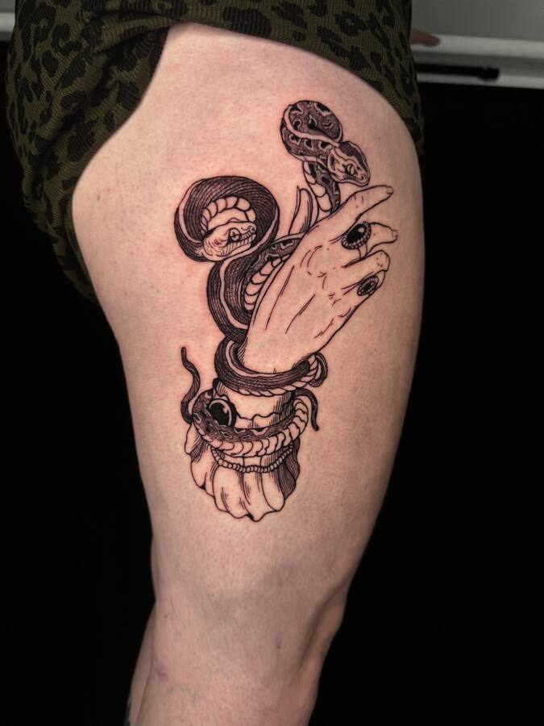
Bêtes
Venues des enluminures et des bestiaires : des animaux qu'on reconnaît sans pouvoir tout à fait les nommer. Elles se posent là où le corps bouge, pour que le dessin bouge avec.
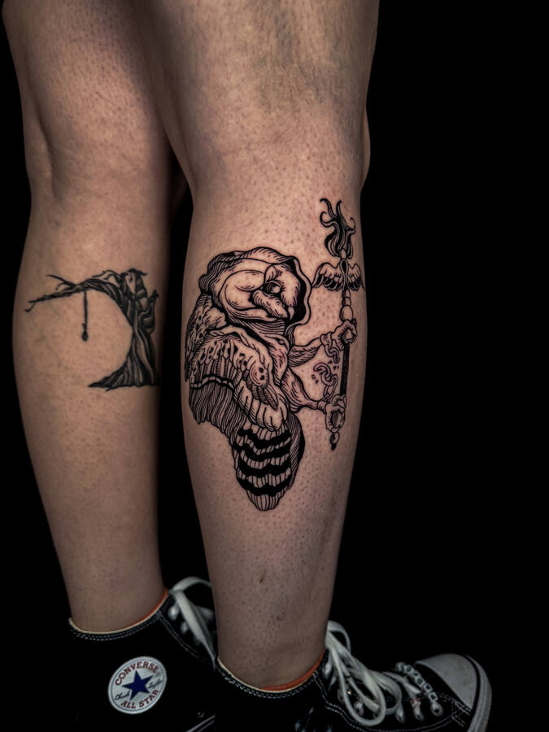
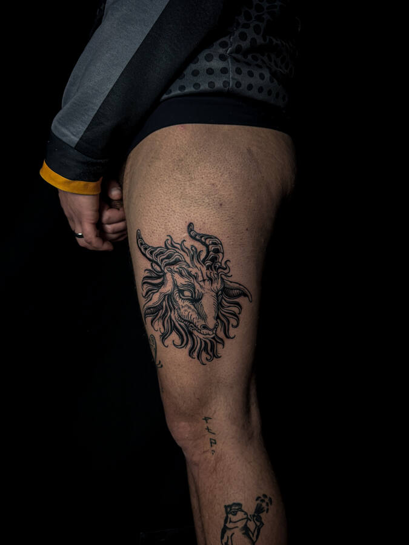
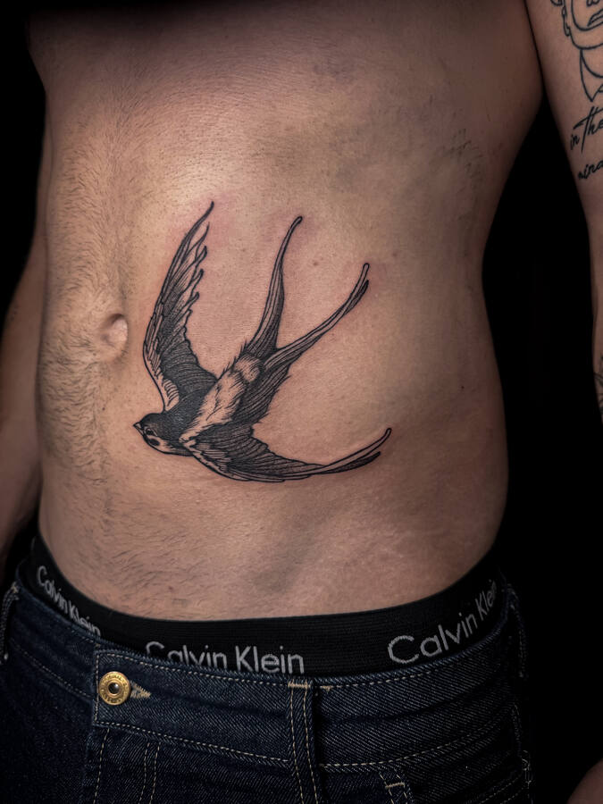
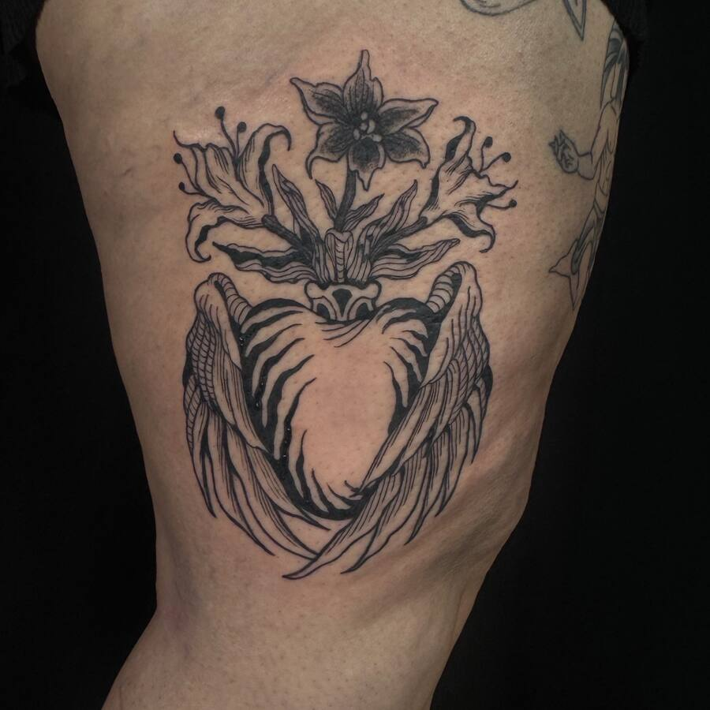
Crânes, cierges et brume
Rien de morbide : le crâne est ce qui reste, le cierge ce qui éclaire, la brume ce qui passe. Des pièces verticales, souvent sur l'avant-bras, qu'on lit de bas en haut.
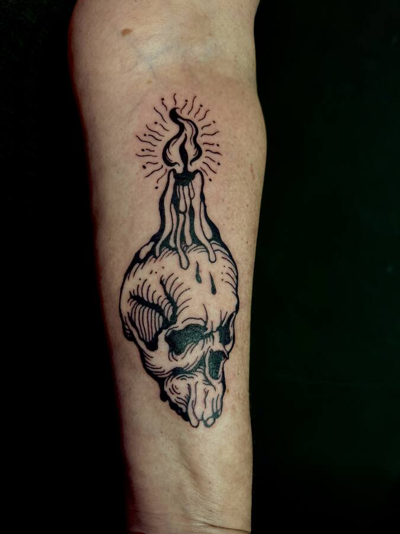
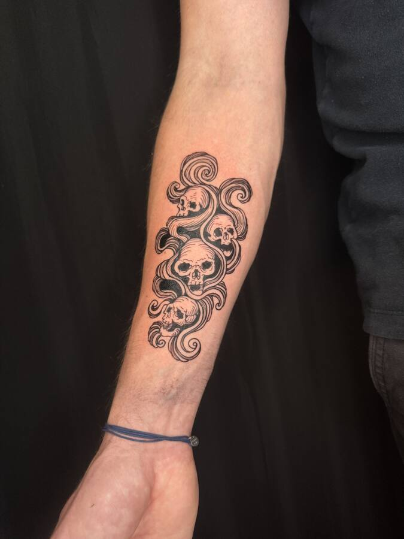
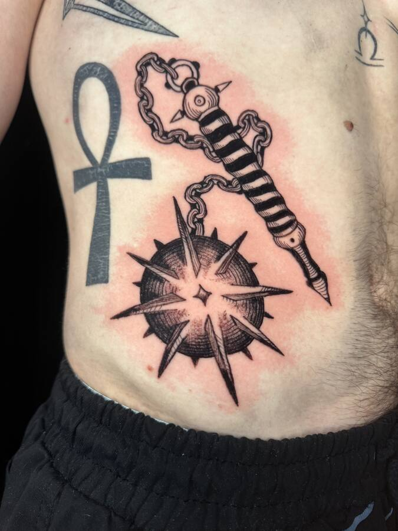
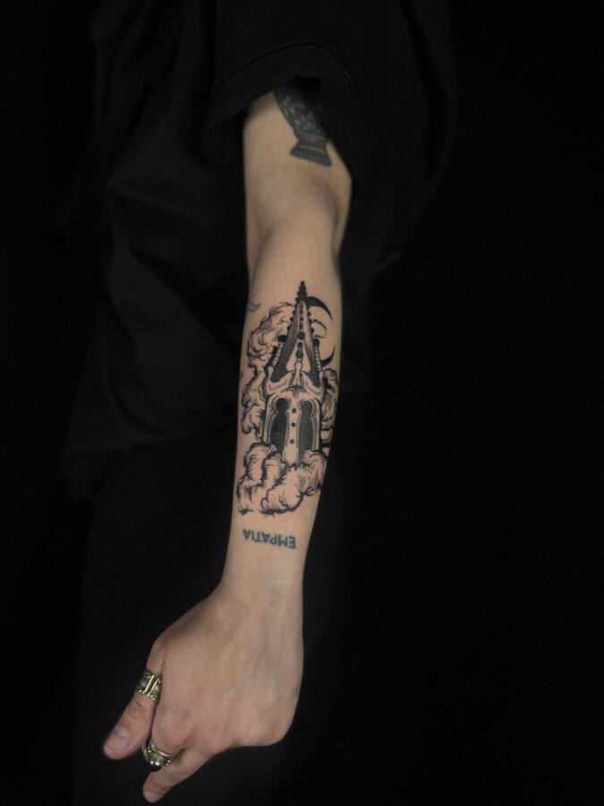
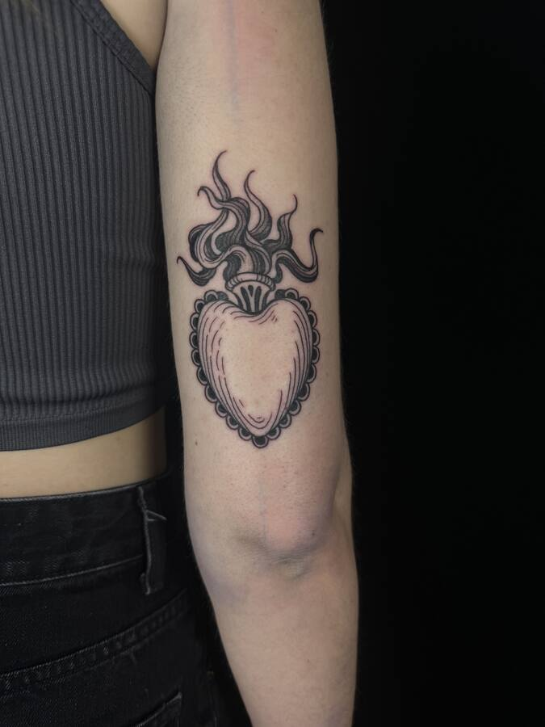
Yeux et soleils
Les figures les plus anciennes du répertoire, celles des cadrans et des frontispices. Elles se placent au centre du corps : sternum, poitrine, pli du coude.
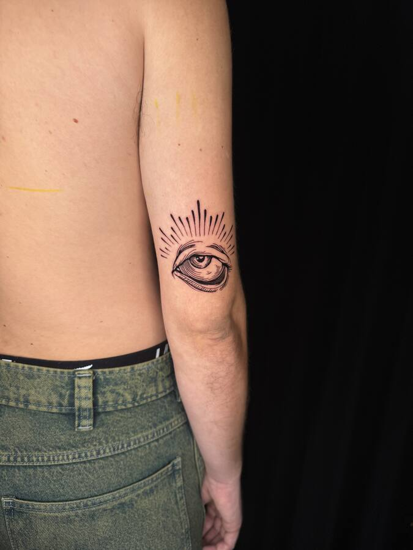
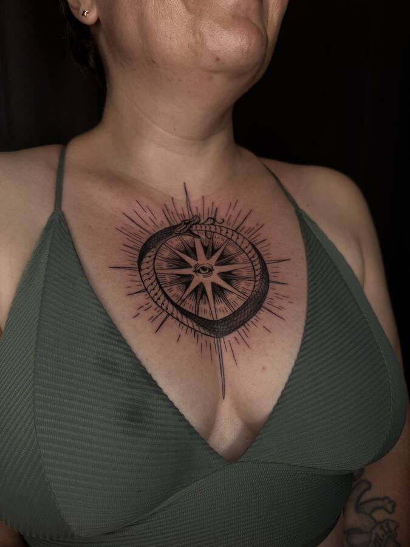
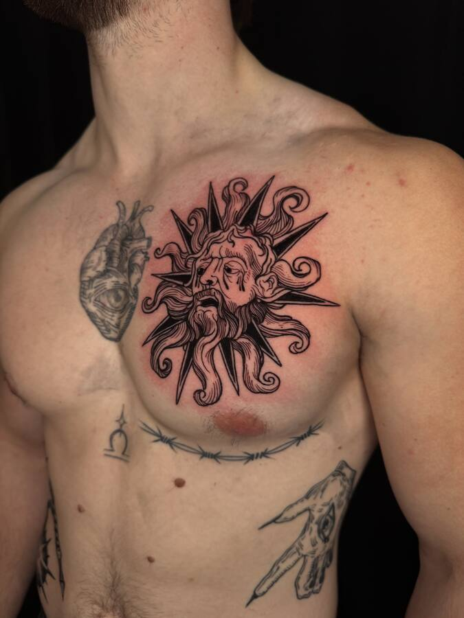